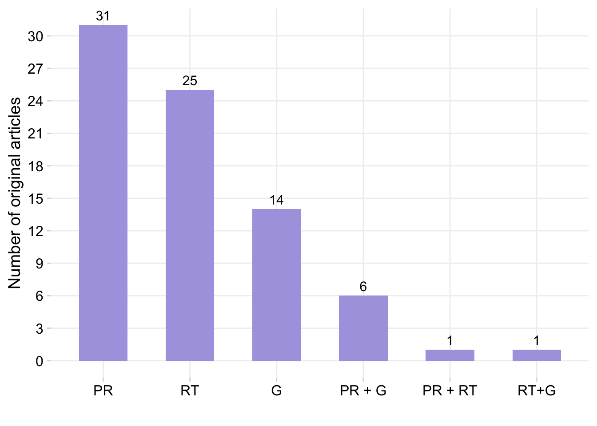
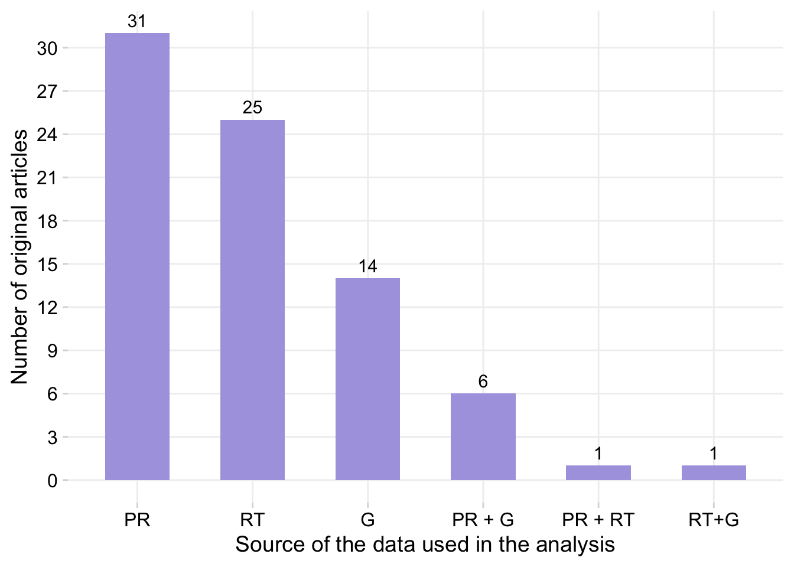
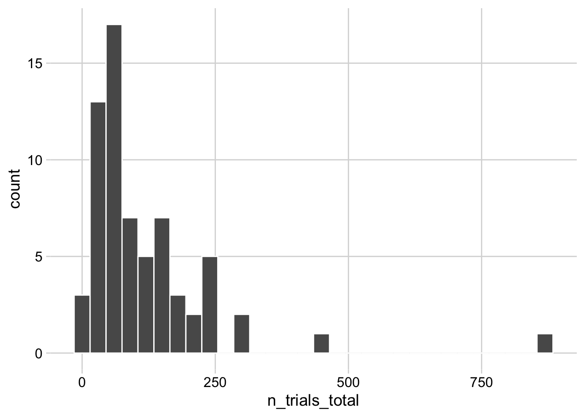

Meta-analysis in Plant Pathology
dat <- gsheet2tbl("https://docs.google.com/spreadsheets/d/1vYXB1Ag-ouLgo9nLIelP1V0hz-ki0f7p-aOCAkmuxKI/edit#gid=1058316481")
theme_set(theme_minimal_grid())Bibliographic info
Pub type by year
p1 <- dat %>%
tabyl(pub_year, article_type) %>%
pivot_longer(names_to = "Type",
values_to = "n", 2:3) %>%
ggplot(aes(pub_year, n, fill = Type))+
geom_col()+
theme(legend.position = "bottom",
panel.grid.major=element_line(colour="grey94"))+
scale_fill_discrete_qualitative(palette = "cold")+
scale_y_continuous(n.breaks = 10)+
labs( x = "Publication year", y = "Number of publications")Journals
tab2 <- dat %>%
dplyr::select(journal) %>%
tabyl(journal) %>%
select(-percent) |>
arrange(-n)
tab2 journal n
Plant Disease 22
Phytopathology 21
Crop Protection 4
Plant Pathology 4
Biological Control 3
European Journal of Plant Pathology 3
Plant Health Progress 2
Summa Phytopathologica 2
African journal of agricultural research 1
Agronomy 1
Agronomy Science and Biotechnology 1
Annual Review of Phytopathology 1
Australasian Plant Pathology 1
Basic and Applied Ecology 1
Biochar 1
BioControl 1
Chemical and Biological Technologies in Agriculture 1
Ciência Rural 1
Food Security 1
frontiers in Molecular Biosciences 1
HortScience 1
Journal of Fungi 1
Journal of Plant Pathology 1
Nature Earth & Environment 1
Physiological and Molecular Plant Pathology 1
Plant Soil 1
Plants 1
PLOS ONE 1
Research, Society and Development 1
Sustainability 1
The Plant Pathology Journal 1old_par <- par(mar = c(0, 2, 0, 0), bg = NA)
p1 + wrap_elements(panel = ~wordcloud(words = tab2$journal, freq = tab2$n, min.freq = 1, max.words=200, random.order=FALSE, rot.per=0.25, colors=brewer.pal(6, "Dark2")))
par(old_par)
ggsave("figs/figure1.png", width = 14, height = 7, bg = "white")Authorship network
library(purrr)
library(purrrlyr)
authors_net <- dat_authors %>% select (2:32)
author_list <- flatten(by_row(authors_net, ..f = function(x) flatten_chr(x), .labels = FALSE))
author_list <- lapply(author_list, function(x) x[!is.na(x)])
# create the edge list
author_edge_list <- t(do.call(cbind, lapply(author_list[sapply(author_list, length) >= 2], combn, 2)))
author_edge_list[1:10, ] [,1] [,2]
[1,] "Madden LV" "Piepho HP"
[2,] "Madden LV" "Paul PA"
[3,] "Piepho HP" "Paul PA"
[4,] "Machado FJ" "Santana FM"
[5,] "Machado FJ" "Lau D"
[6,] "Machado FJ" "Del Ponte EM"
[7,] "Santana FM" "Lau D"
[8,] "Santana FM" "Del Ponte EM"
[9,] "Lau D" "Del Ponte EM"
[10,] "Dalla Lana F" "Paul PA" Within an authorship network, co-authors (present in a same article) are linked together. Authors from this articles can be connected to authors from other articles whenever they appear together. Therefore, two articles are linked by a common author. Each author is then considered a node in the network and the connections between them are the edges or links. There are several statistics to calculate in a network analysis.
For now, let’s visualize the authorship network and also the community structure which was defined via a function that tries to find densely connected subgraphs, also called communities. We will use a random walk algorithm for determining the communities. The idea is that short random walks tend to stay in the same community. In the network below, there are 15 communities or subgraphs which are represented by the colors.
# igraph
library(igraph)
net=graph.edgelist(as.matrix(author_edge_list), directed=FALSE)
degree <- enframe(degree(net))
degree %>%
arrange(-value)# A tibble: 325 × 2
name value
<chr> <dbl>
1 Godoy CV 132
2 Campos HD 124
3 Nunes J 124
4 Martins MC 124
5 Venancio WS 124
6 Paul PA 120
7 Bradley CA 116
8 Utiamada CM 115
9 Wise KA 115
10 Del Ponte EM 114
# … with 315 more rows#summary(degree$degree.net.)
between <- data.frame(round(betweenness(net), 1))
page <- data.frame(page_rank(net)$vector)
close <-data.frame(round(closeness(net), 10))
eigen <- data.frame(round(evcent(net)$vector, 5))
between |>
head(20) |>
arrange(- round.betweenness.net...1.) round.betweenness.net...1.
Paul PA 6625.0
Del Ponte EM 3355.8
Madden LV 2606.3
Dalla Lana F 1901.8
Godoy CV 1046.9
Utiamada CM 955.1
Campos HD 383.8
Nunes J 383.8
Juliatti FC 229.7
Carneiro LC 177.3
da Silva LHCP 161.1
Forcelini CA 103.0
Machado FJ 29.5
Siqueri FV 21.4
Borges EP 21.4
Santana FM 14.1
Lau D 14.1
Jaccoud-Filho DS 9.2
Miguel-Wruck DS 9.2
Piepho HP 0.0Network graph
library(network)
library(intergraph)
# Clusters
wc <- cluster_walktrap(net)
eb <- cluster_edge_betweenness(net)
lec <- cluster_leading_eigen(net)
cl <- cluster_label_prop(net)
# Modularity
mod <- modularity(wc)
ms <- membership(wc)
net_stat <- asNetwork(net)
png("figs/network1.png", res = 600, width = 5000 , height = 5000, units="px")
set.seed(11)
par(mar=c(0,0,0,0))
plot.network(net_stat, vertex.cex= 0.05 + 0.25*log(graph.strength(net)), label =ifelse(degree(net)>100,V(net)$name,NA), label.bg = "white", label.col = "black", edge.col = "lightgray", edge.lty = 0.5, label.cex = 0.6, displaylabels = TRUE, vertex.col = membership(wc), jitter = T, edge.len = 0.2, boxed.labels=T, label.border=1, pad=5)
dev.off()quartz_off_screen
2 
library(networkD3)
wc <- cluster_walktrap(net)
members <- membership(wc)
net2 <- igraph_to_networkD3(net, group = members)
forceNetwork(Links = net2$links, Nodes = net2$nodes,
Source = 'source', Target = 'target',
NodeID = 'name', Group = 'group') |>
saveNetwork(file = 'figs/net.html')# create a csv file of the network
write_csv(as_long_data_frame(net), file = "rede.csv")Data characteristics
Source
p2 <- dat %>%
filter(article_type == "Original Article") %>%
tabyl(data_source) %>%
ggplot(aes(reorder(data_source, -n), n, fill = n))+
geom_col(fill = "#ACA4E2", width = 0.56)+
geom_text(
aes(x = data_source, y = n, label = n),
position = position_dodge(width = 1),
vjust = -0.5, size = 4) +
theme(legend.position = "bottom",
panel.grid.major=element_line(colour="grey94"))+
scale_y_continuous(breaks = c(0, 3, 6, 9, 12, 15, 18, 21, 24, 27, 30))+
labs(x = "Source of the data used in the analysis", y = "Number of original articles")
p2
ggsave("figs/figure2.png", width =8, height = 6, bg = "white")Systematic review in PR?
dat |>
tabyl(systematic_review, data_source) systematic_review G PR PR + G PR + RT RT RT+G NA_
no 13 0 0 0 25 1 0
yes 1 31 6 1 0 0 0
<NA> 0 0 0 0 0 0 6PRISM diagram?
dat |>
tabyl(sr_flow_diag) sr_flow_diag n percent valid_percent
no 70 0.83333333 0.8974359
yes 8 0.09523810 0.1025641
<NA> 6 0.07142857 NAStudy characteristics
Number of trials
dat |>
count(n_trials_total) |>
ggplot(aes(n_trials_total))+
geom_histogram(color = "white")`stat_bin()` using `bins = 30`. Pick better value with `binwidth`.Warning: Removed 1 rows containing non-finite values (stat_bin).
dat |>
count(n_trials_total) |>
summary() n_trials_total n
Min. : 10.00 Min. :1.000
1st Qu.: 45.25 1st Qu.:1.000
Median : 75.50 Median :1.000
Mean :115.77 Mean :1.254
3rd Qu.:160.75 3rd Qu.:1.000
Max. :879.00 Max. :6.000
NA's :1 By objective and product type
objective <- dat %>%
filter(article_type == "Original Article") %>%
tabyl(objective) |>
select(-percent)
type <- dat %>%
filter(article_type == "Original Article") %>%
filter(objective == "Product effects") %>%
tabyl(product_type) |>
select(-percent)
cbind(objective, type) objective n product_type n
1 Dis-toxin relationship 2 Bactericides 1
2 Epidemic parameter 1 BCAs 11
3 Host effects 1 Disinfestant 3
4 Management effects 8 Fertilizer 1
5 Monocyclic component 1 Fungicide 38
6 Product and host effects 1 Fungicide+BCAs 1
7 Product effects 57 Nematicide 1
8 Yld-Dis relationship 7 Sprayers and adjuvants 1Response variables
tab <- dat %>%
dplyr::select(response1 , response2, response3, response4) %>%
pivot_longer(names_to = "type", values_to = "Variable", 1:4) %>%
select(Variable) %>%
filter(Variable != "NA") %>%
tabyl(Variable) %>%
select(-percent)
nrow(tab)[1] 41tab Variable n
100-seed weights 1
absolute yield 1
b^ 1
cankers 1
disease 1
DON 5
efficacy 2
eggs mass and root mass 1
Eggs/eggmass numbers in roots 1
fruit 1
galls index 1
germination 1
incidence 14
incidence difference 1
incidence ratio 2
index 11
intensity 4
intercept 9
latent period 1
marketable yield 1
natural enemies 1
nematode density 1
number of eggs 1
number of galls 1
odds ratio 1
percent galled root 1
pest abundance 1
pests 1
plant biomass 1
plant damage 1
plant growth 1
relative yield 1
risk ratio 1
RKN numbers in soil 1
Root galling 1
sclerotia mass 1
severity 18
slope 9
test weight 3
weeds 1
yield 37library(wordcloud)
wordcloud(words = tab$Variable, freq = tab$n, min.freq = 1, max.words=200, random.order=FALSE, rot.per=0.25, colors=brewer.pal(5, "Dark2"))
Number of responses per study
dat |>
tabyl(n_responses) n_responses n percent valid_percent
1 35 0.41666667 0.45454545
2 30 0.35714286 0.38961039
3 5 0.05952381 0.06493506
4 6 0.07142857 0.07792208
5 1 0.01190476 0.01298701
NA 7 0.08333333 NAMeta-analysis model characteristics
Effect sizes
dat %>%
dplyr::select(effect_size_1, effect_size_2, effect_size_3, effect_size_4) %>%
pivot_longer(names_to = "type", values_to = "value", 1:4) %>%
select(value) %>%
filter(value != "NA") %>%
tabyl(value) |>
adorn_totals() value n percent
BPL b 1 0.006993007
Cohen's d 1 0.006993007
Hedges' g 3 0.020979021
incidence ratio 3 0.020979021
log means 26 0.181818182
log of d 1 0.006993007
log ratio 41 0.286713287
mean diff 10 0.069930070
means 54 0.377622378
odds ratio 3 0.020979021
Total 143 1.000000000Effect-size by common response variable
es <- dat %>%
dplyr::select(code, effect_size_1, effect_size_2, effect_size_3, effect_size_4) %>%
pivot_longer(names_to = "type", values_to = "value", 2:5)
rv <- dat %>%
dplyr::select(code, response1 , response2, response3, response4) %>%
pivot_longer(names_to = "type", values_to = "Variable", 2:5)
rv# A tibble: 336 × 3
code type Variable
<dbl> <chr> <chr>
1 1 response1 <NA>
2 1 response2 <NA>
3 1 response3 <NA>
4 1 response4 <NA>
5 2 response1 index
6 2 response2 yield
7 2 response3 <NA>
8 2 response4 <NA>
9 3 response1 index
10 3 response2 yield
# … with 326 more rowsleft_join(es, rv, by = "code") |>
select(Variable, value) |>
filter(Variable %in% c("severity", "incidence", "yield", "index")) |>
tabyl(value, Variable) value incidence index severity yield
incidence ratio 2 0 0 0
log means 4 4 12 18
log of d 0 0 1 0
log ratio 14 15 12 19
mean diff 0 0 2 9
means 11 8 7 29
odds ratio 3 0 0 0
<NA> 22 17 38 73Sampling variance
dat |>
tabyl(sampling_var) sampling_var n percent valid_percent
inverse-variance 41 0.4880952 1
<NA> 43 0.5119048 NAHeterogeneity test
dat |>
tabyl(`Heterogenity test`) Heterogenity test n percent valid_percent
H2 and I2 1 0.01190476 0.02173913
I2 9 0.10714286 0.19565217
I2 and R2 1 0.01190476 0.02173913
LRT 5 0.05952381 0.10869565
LRT and I2 1 0.01190476 0.02173913
LRT and R2 2 0.02380952 0.04347826
Q 8 0.09523810 0.17391304
Q and I2 4 0.04761905 0.08695652
Q, H2 and I2 1 0.01190476 0.02173913
Q, I2 4 0.04761905 0.08695652
R2 2 0.02380952 0.04347826
Wald 8 0.09523810 0.17391304
<NA> 38 0.45238095 NAGeneral approach
dat |>
tabyl(ma_approach) ma_approach n percent valid_percent
Bayesian 1 0.01190476 0.01282051
frequentist 75 0.89285714 0.96153846
frequentist and Bayesian 2 0.02380952 0.02564103
<NA> 6 0.07142857 NAMA basic model
dat |>
tabyl(ma_model) ma_model n percent valid_percent
mtc 4 0.04761905 0.05333333
multivariate 7 0.08333333 0.09333333
NMA 17 0.20238095 0.22666667
univariate 47 0.55952381 0.62666667
<NA> 9 0.10714286 NAMA model n. of effects
dat |>
tabyl(ma_model_2) ma_model_2 n percent valid_percent
fixed and random effects 4 0.04761905 0.05194805
fixed effects 7 0.08333333 0.09090909
Kruskall-Wallis one-way ANOVA 1 0.01190476 0.01298701
linear regression 1 0.01190476 0.01298701
mixed effects 34 0.40476190 0.44155844
non-parametric 1 0.01190476 0.01298701
random and mixed-effects 3 0.03571429 0.03896104
random effects 23 0.27380952 0.29870130
random-effects 3 0.03571429 0.03896104
<NA> 7 0.08333333 NANumber of variables
dat |>
tabyl(ma_n_variables) ma_n_variables n percent valid_percent
univariate 74 0.8809524 1
<NA> 10 0.1190476 NAModerator analysis?
dat |>
tabyl(moderator) moderator n percent valid_percent
no 12 0.14285714 0.1538462
yes 66 0.78571429 0.8461538
<NA> 6 0.07142857 NAdat |>
tabyl(moderator_model) moderator_model n percent valid_percent
metaregression 2 0.02380952 0.03030303
subgroup 33 0.39285714 0.50000000
subgroup and metaregression 29 0.34523810 0.43939394
subroup 2 0.02380952 0.03030303
<NA> 18 0.21428571 NASoftware characteristics
General software
dat |>
tabyl(general_software) general_software n percent valid_percent
ARM ST 1 0.01190476 0.01369863
CMA 5 0.05952381 0.06849315
GENSTAT 1 0.01190476 0.01369863
Meta Win 2 0.02380952 0.02739726
MetaWin 1 0.01190476 0.01369863
OpenMee 1 0.01190476 0.01369863
R 29 0.34523810 0.39726027
SAS 31 0.36904762 0.42465753
Stata 1 0.01190476 0.01369863
WinBUGS 1 0.01190476 0.01369863
<NA> 11 0.13095238 NAdat |>
tabyl(MA_software) MA_software n percent valid_percent
brms 1 0.01190476 0.01612903
CMA 4 0.04761905 0.06451613
lme4 2 0.02380952 0.03225806
lme4 anc R2jags 1 0.01190476 0.01612903
metafor 25 0.29761905 0.40322581
PROC GLIMMIX 8 0.09523810 0.12903226
PROC MIXED 20 0.23809524 0.32258065
PROC UNIVARIATE 1 0.01190476 0.01612903
<NA> 22 0.26190476 NAData summary
Results in table?
dat |>
tabyl(res_table) res_table n percent valid_percent
no 9 0.10714286 0.1153846
yes 69 0.82142857 0.8846154
<NA> 6 0.07142857 NAResults in plot for raw data
dat |>
tabyl(res_plot_raw) res_plot_raw n percent valid_percent
no 46 0.54761905 0.5897436
yes 32 0.38095238 0.4102564
<NA> 6 0.07142857 NAResult in forest plot
dat |>
tabyl(res_forest) res_forest n percent valid_percent
no 63 0.75000000 0.8076923
yes 15 0.17857143 0.1923077
<NA> 6 0.07142857 NAEconomic analysis
dat |>
tabyl(econ_analysis) econ_analysis n percent valid_percent
no 59 0.70238095 0.7564103
yes 19 0.22619048 0.2435897
<NA> 6 0.07142857 NA